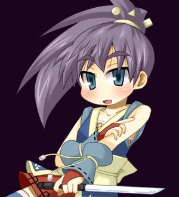

| プロフィール | |||
| 年齢： | 13歳 |  | |
| 職業： | 忍者 | ||
| 身長： | 135cm | ||
| 体重： | 34kg | ||
| 3size： | B73・W50・H72 | ||
| 好き： | 和食 | ||
| 嫌い： | 洋食 | ||
| 大切： | 厚底下駄 | ||
| 武器： | 鞘走流体術 | ||
| キャラ設定 | |||
| 由緒正しき忍び、鞘走一族の末席の少女。 最近は、世が平和になったため、一般人に紛れて普通に生活している。 妖怪退治を生業とする春葉一族の娘、沙々理とは犬猿の仲だが、喧嘩するほど仲がいいという典型。 良く一緒に行動して悪さの片棒を担がされる役回り。 カッコイイ忍者に憧れて、普段はクールに振舞っているが、地は気の小さい泣き虫。 想定外のことが起きるとすぐ涙目でヘタレはじめる。 身長が低いのを非常に気にしており、少しでも大きく見せようと、底の厚い下駄を履いている。 突如、沙々理に連れられて、異国行きの船に乗せられ、訳のわからないうちに大陸を渡ってきた。 密航がばれて、一人捕まってしまったため、釈放された現在は、はぐれた沙々理を探して行動している。 純粋な身体能力による体術を武器に戦い、呪符や式、術の類は使わない。 戦闘能力は沙々理よりかなり上だが、変則的な術や騙まし討ちに翻弄されて、手玉に取られている。 武器の名は忍刀「小蜂」。 軽さと鋭さに主眼を置いた小ぶりの直刀であり、代々、鞘走家の忍者が修練中に使用している。 |
|||
| ゲーム中の性能 | |||
| 移動技「疾駆」を起点に多数の技を繰り出し、動き回るスピードキャラ。 大きく画面内を移動し、相手を翻弄する。 反面、各種技を繰り出すために「疾駆」が必要なため、小回りが利きにくい。 リーチも非常に短いものが多く、通常ダッシュも特殊なため、扱いが難しい中級者以上向けキャラ。 |
|||
| オリジナルアビリティ | |||
| 疾駆 |  |
||
| 電光石火 | |||
| 鞘走流体術 | *スキルを別の*スキルに、2回までキャンセル可能 | ||
| 鞘走流移動術 | 空中ダッシュと多段ジャンプの使用回数を共有しない | ||
| 飛燕・弐式 | (飛燕壁接触中) |
||
| 飛燕・改 | (空中技中) |
||
| 飛燕・参式 | (飛燕壁接触中) |
||
| スキル | |||
| *速射突き |      (疾駆中) (疾駆中) |
||
| *円月 |   (疾駆中or空中可) (疾駆中or空中可) |
||
| *水面斬り |  (疾駆中) (疾駆中) |
||
| *風薙 | (疾駆中) |
||
| *陽炎 |  (疾駆中) (疾駆中) |
||
| *飛燕 | (疾駆中、空中可) |
||
| 瞬雷 | (飛燕で壁接触中に) |
||
| 転刃襲 | (飛燕で壁接触中に) |
||
| *鷲迅脚 | (空中) |
||
| *極楽鳥 | (空中) |
||
| *鉄槌落とし | (空中) |
||
| 三途渡し | |
||
| 流星落 | |
||
| 変わり身 | |
||
| フィニッシュスキル | |||
| 五月雨月光斬 | (派生数限界後or三途渡しor流星落or変わり身後) |
||